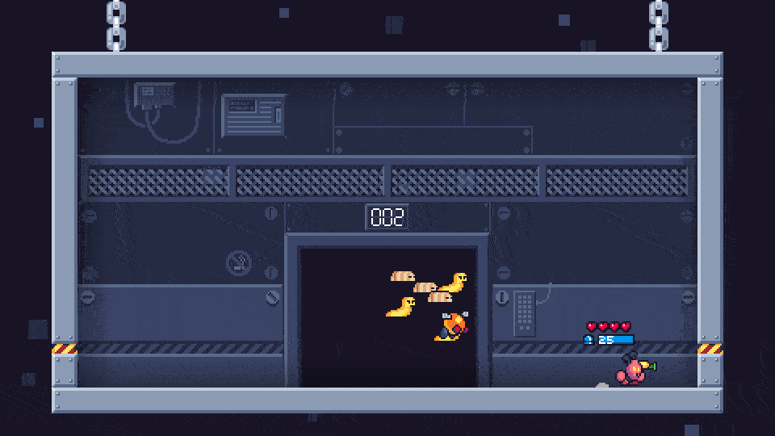
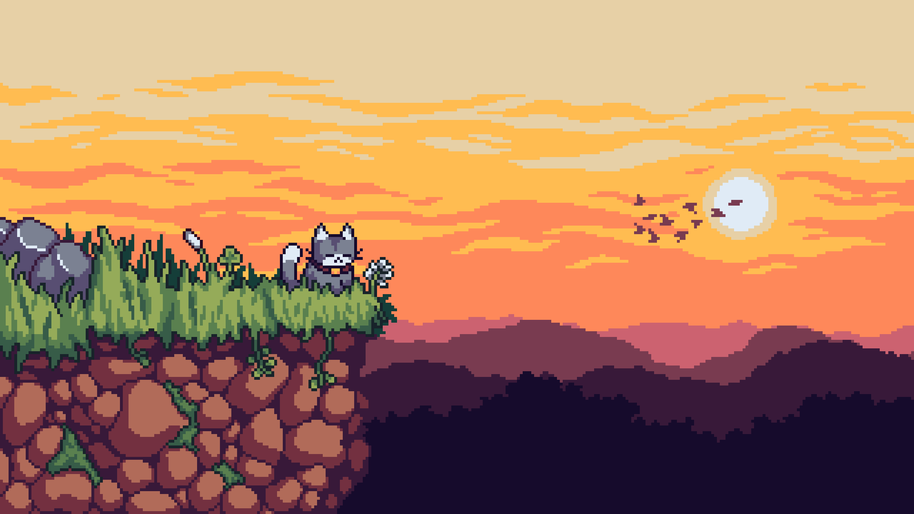
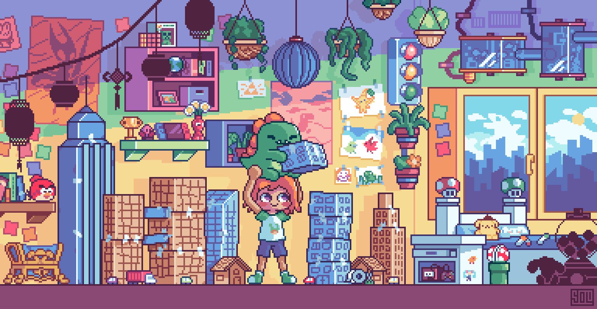
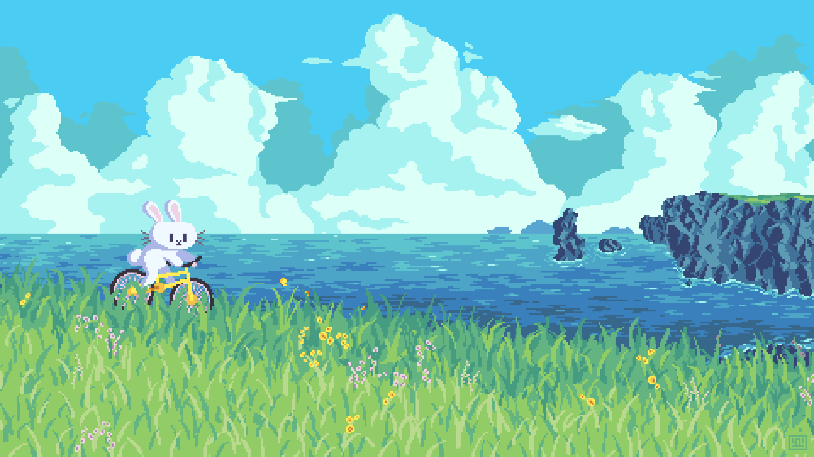
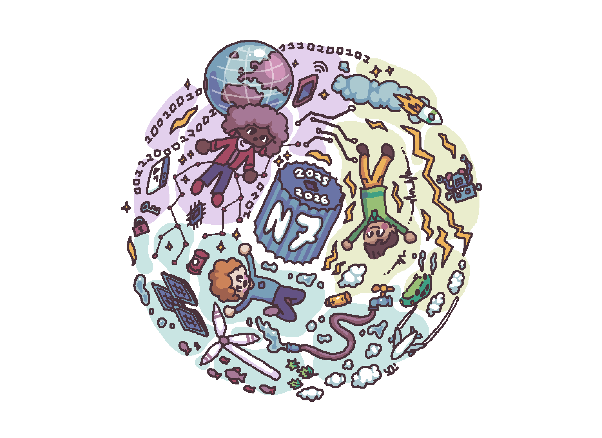

Other Activities
Video Game Development
I am passionate about video game development, and I have been making games for almost eight years now. I see creating video games as something almost magical: through lines of code and fleeting electricity running through a computer, vivid emotions like joy and wonder come to life. The hope of inspiring these emotions in others is what motivates me to continue on this path.
Here are a few examples of games I have created in the past:
Birds With Guns
Birds With Guns is an im-peck-able roguelike shooter where two can play an egg-citing journey to reclaim your eggs for the bird kingdom. Made by a team of quail-ified developers, you're guaranteed to have no egrets.
Bugscraper
Welcome to the Bugscraper. Rise to the top of this bug-filled skyscraper in a roguelike shooter where you'll battle waves of enemies on every floor on your way to your boss's office.
You can learn more about my other games on my website: yolwoocle.com/games
Drawing
I have always loved drawing, and I enjoy making my creations colorful and vibrant. Over the years, I have experimented with many techniques and styles, but the one I have mastered the most is pixel art. Here are some examples of my work:
   You can look at my other drawings on my website: yolwoocle.com/art